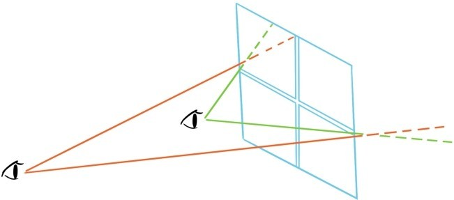
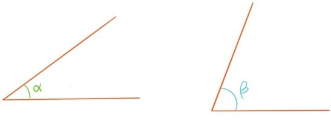
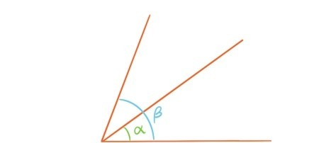
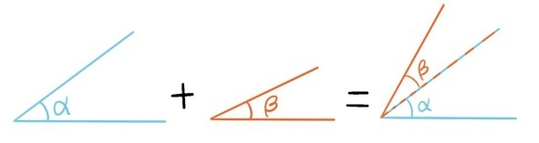
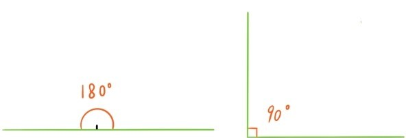
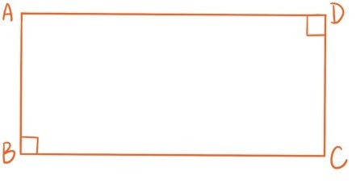

常识告诉我们，越靠近窗户，往外看的视野越宽阔。

将这种观看视野抽象出来，就会形成角的概念。角是指从同一端点出发的两条射线所围成的平面区域，这两条射线称为角的边。

如果移动左边的角，让它的端点和一条边与右边的角的端点和一条边重合，就可以比较两个角的大小。

除了比较大小，这两个角还可以相加减。

角的大小称为角度，为了更便捷地衡量角度，将一条射线绕端点旋转一周划过的整个平面区域平均分成360个角，每个角的大小就是1°（读作1度）。因此按照这个规定，周角是360°（读作360度）。划过半周的角就是180°，将这样的角称为平角。平角的一半就是90°，称为直角。

这里，可能有人会问：
问题29：为什么要规定周角是360°？为什么要用360这个数？
这个问题当然有历史演化的原因，不过也可以给出一个直接的解释。在关于角度的应用中，经常会碰到将周角平均分的情形，而360是可以被2，3，4，5，6，8，9，10，12整除（平均分）的最小正整数。这样的数既不会太大导致相关计算变复杂，又非常适合平均分。
大于0°，小于90°的角称为锐角，大于90°，小于180°的角称为钝角。
将一个小于180°的角的一个边沿反方向延伸后，与另一个边形成一个新的角，称为原来角的补角。任何一个角和它的补角相加都等于180°。
称两条直线是垂直的，指它们相交所成的角是直角，这时也称一条直线是另一条直线的垂线，交点称为垂足。以下图长方形ABCD为例，边AB是边BC的垂线，垂足为B；边AD是边DC的垂线，垂足为D。
